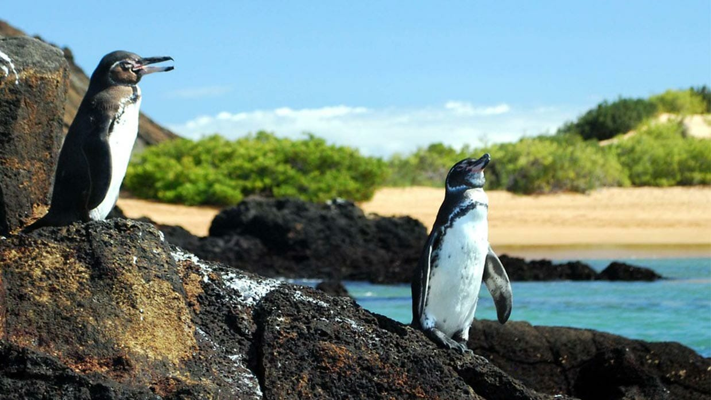

Gaines Galapagos Penguin
The Galápagos penguin (Spheniscus mendiculus) is a penguin endemic to the Galápagos Islands, Ecuador. It is the only penguin found north of the equator.[4] Most inhabit Fernandina Island and the west coast of Isabela Island. The cool waters of the Humboldt and Cromwell Currents allow it to survive despite the tropical latitude. The Galápagos penguin is one of the banded penguins, the other species of which live mostly on the coasts of Africa and mainland South America. It is one of the smallest species of penguin in the world. Because of their warm environment, Galápagos penguins have developed techniques to stay cool. The feathers on their back, flippers, and head are black, and they have a white belly and a stripe looping from their eyes down to their neck and chin. Each penguin keeps only one mate, and breeds year-round. Their nests are typically in caves and crevices as protection against predators and the harsh environment. The Galápagos penguin has a lifespan of about 15 to 20 years, but due to predation, life expectancy in the wild could be significantly reduced.
- The Galapagos penguin is related to the Humboldt Penguin from Chile. They originally washed up on Galapagos shores some 4 million years ago, swimming up on ocean currents. The Galapagos waters are very rich in fish and nutrients, so they decided to stay here where they have plenty of food.
- Penguins are designed for the cold weather of the Antrarctic, so the Galapagos penguin has had to adapt to live in hot weather.
Firstly, they became smaller, losing excess body fat that was no longer required to keep them warm in cold seas. Today Galapagos penguins are perfectly lean and streamlined for the hot sun on the equator.
Secondly, Galapagos Penguins had to adapt a method of thermo-regulation. Penguins have no sweat glands, so they cannot sweat like humans to cool off. Instead they have learned to pant like dogs in order to keep cool. They also tend to keep out of the hot midday sun, staying in the shade or taking a dip in the sea.
If you happen to see them hunched over in a strange standing position, it’s to keep their delicate feet in the shade to avoid sun burn.
- Galapagos penguins can grow up to 19inches (48cm) tall, weighing just 5.5 pounds (2.5kg). For comparison an adult Emperor Penguin weighs a full 18 times more! In fact, only the Little Penguin (Fairy Penguin), found in Australia and New Zealand, is smaller in size than the Galapagos penguin.
TITANIC picture of my favorite movie">
WAY TO INDEX.HTML